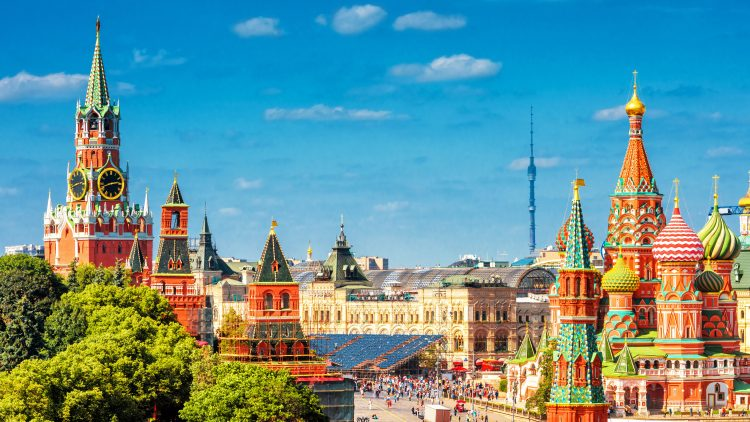

От 1 до 5 място за най-известните градове в света
1 място
Лондон, Англия

Лoндон е столицата на Обединеното кралство Великобритания и Северна Ирландия, и наред с Ню Йорк, Париж и Токио, е нареждан сред най-важните четири световни града.През Лондон тече река Темза, над която са построени множество мостове. Най-известният сред тях е Тауър Бридж (Tower Bridge).
2 място
Париж, Франция

Париж е столицата и най-големият град на Франция. Разположен е в меандър на река Сена, която го разделя на 2 части – десен бряг (Rive droite) на север и по-малкия ляв бряг (Rive gauche) на юг. Реката е известна с многобройните си кейове, които в голямата си част са озеленени и предназначени за разходка.
3 място
Ню Йорк, САЩ

Ню Йорк (New York City) е американски метрополис, разположен в щата Ню Йорк. С площ близо 1215 km², той е един от най-големите градове в света и осмият по гъстота на населението от 8 млн. души.Метрополисът се намира в центъра на една от най-гъсто населените градски агломерации в света – Голям Ню Йорк.
4 място
Москва, Русия
Москва е столицата и най-населеният град на Русия. Според преброяването през 2010 г. населението му е 11 503 501 души. Той е най-големият град в Европа и пети в света и едно от основните политически, икономически, културни и научни средища на континента.
5 място
Дубай, ОАЕ
Дубай е столицата и най-големият град на емирство Дубай от Обединените арабски емирства. Градът е най-важният търговски и финансов център на ОАЕ и на целия Близък Изток. Разположен е на югоизточния бряг на Персийския залив, на югозапад от Шарджа и на североизток от Абу Даби.